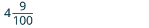
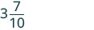
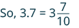
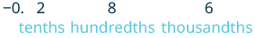
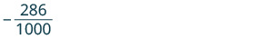
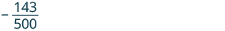

দশমিক সংখ্যাকে ভগ্নাংশ বা মিশ্র ভগ্নাংশে প্রকাশ করো
উৎস-অনুগত উপবিভাগ · m81293-fs-id1365792। সম্পূর্ণ বইয়ের অনুবাদ এখনও চলছে। গাণিতিক চিহ্ন, সংখ্যা ও মূল কাঠামো অক্ষুণ্ণ; প্রযোজ্য ক্ষেত্রে সূত্রের শব্দলেবেল বাংলায় অনূদিত। মূল ছবির ভিতরের ইংরেজি লেবেলের অর্থ বাংলা বিবরণে আছে। স্বাধীন শিক্ষক ও ভাষা-পর্যালোচনা বাকি। অন্য উপবিভাগের উৎস-লিঙ্কে ইন্টারনেট প্রয়োজন।
দশমিক সংখ্যাকে ভগ্নাংশ বা মিশ্র ভগ্নাংশে প্রকাশ করো
অনেক সময় দশমিক সংখ্যাকে ভগ্নাংশ বা মিশ্র ভগ্নাংশে লিখতে হয়। দশমিক সংখ্যাকে ভগ্নাংশে প্রকাশ করার পদ্ধতি বুঝতে দুপুরের খাবারের অর্ডারটির কথায় ফিরে যাই। আমরা জানি, বলতে বোঝায় ডলার ও সেন্ট। এক ডলারে সেন্ট থাকে বলে সেন্ট হল এক ডলারের অংশ। তাই
দশমিক বিন্দুর একেবারে ডান দিকের অঙ্কটি কোন স্থানে আছে তা দেখে দশমিক সংখ্যাকে ভগ্নাংশে প্রকাশ করি। যেমন, দশমিক সংখ্যাটি হল যেখানে আছে শতাংশের স্থানে। তাই লঘিষ্ঠ আকারে প্রকাশের আগে ভগ্নাংশের হর হবে ; এই ভগ্নাংশের সমতুল দশমিক সংখ্যাটি হল
আমাদের দামের দুপুরের খাবারের জন্য দশমিক সংখ্যা -কে মিশ্র ভগ্নাংশে লেখা যায়।
এই উদাহরণগুলিতে ঋণচিহ্ন থাকলে সেটি সাময়িকভাবে আলাদা করে সংখ্যার মানের দিকে তাকাও। দশমিক বিন্দুর বাঁ দিকের সংখ্যা শূন্য হলে ভগ্নাংশের অংশটি প্রকৃত ভগ্নাংশ হয়; বাঁ দিকের সংখ্যা শূন্য না হলে পূর্ণসংখ্যার অংশ ও প্রকৃত ভগ্নাংশ মিলিয়ে মিশ্র ভগ্নাংশ হয়। সম্পাদকীয় স্পষ্টীকরণ: নিচের পদ্ধতি সসীম দশমিকের জন্য—অর্থাৎ দশমিকের পরে সীমিতসংখ্যক অঙ্ক লেখা আছে। ভগ্নাংশের অংশ শূন্য হলে ফল শুধু পূর্ণসংখ্যা; যেমন 3.0 = 3 এবং 0.0 = 0। ঋণাত্মক সংখ্যার মাইনাস চিহ্নটি শেষে পুরো ফলের আগে রাখো, শুধু ভগ্নাংশের অংশের আগে নয়।
অনুশীলন · এই প্রশ্নের লিঙ্ক
নিচের প্রতিটি দশমিক সংখ্যাকে ভগ্নাংশ বা মিশ্র ভগ্নাংশে লেখো:
ⓐ ⓑ ⓒ
সমাধান
| ⓐ | |
| 4.09 | |
| দশমিক বিন্দুর বাঁ দিকে 4 আছে। মিশ্র ভগ্নাংশের পূর্ণসংখ্যার অংশ হিসেবে 4 লেখো। |
মিশ্র ভগ্নাংশের পূর্ণসংখ্যার অংশ 4; পাশে ভগ্নাংশের লব ও হরের জায়গায় দুটি ফাঁকা ঘর। |
| একেবারে ডান দিকের অঙ্কটি কোন স্থানে আছে তা নির্ণয় করো। | দশমিক সংখ্যা 4.09। 0-এর নীচে দশাংশ এবং 9-এর নীচে শতাংশ লেখা আছে; 0 ও 9-এর স্থান দেখানো হয়েছে। |
| ভগ্নাংশটি লেখো। দশমিক বিন্দুর ডান দিকের অঙ্কগুলি দিয়ে তৈরি সংখ্যা 9, তাই লবে 9 লেখো। |
মিশ্র ভগ্নাংশের পূর্ণসংখ্যার অংশ 4; ভগ্নাংশের লব 9 এবং হরের জায়গাটি ফাঁকা। |
| শেষ অঙ্ক 9 শতাংশের স্থানে আছে, তাই হরে 100 লেখো। |  মিশ্র ভগ্নাংশ: পূর্ণসংখ্যার অংশ 4, ভগ্নাংশের লব 9 ও হর 100; অর্থাৎ 4 + 9/100। |
| ভগ্নাংশটি লঘিষ্ঠ আকারেই আছে। | তাই 4.09 = 4 + 9/100, মিশ্র ভগ্নাংশের আকারে। পূর্ণসংখ্যার অংশ 4; ভগ্নাংশের লব 9 ও হর 100। |
খেয়াল করেছ কি, লঘিষ্ঠ আকারে প্রকাশের আগে হরে শূন্যের সংখ্যা দশমিক ঘরের সংখ্যার সমান? অর্থাৎ দশমিক বিন্দুর পরে যতগুলি অঙ্ক লেখা আছে, 1-এর পরে ততগুলি শূন্য দিয়ে হর তৈরি করা হয়।
| ⓑ | |
| 3.7 | |
| দশমিক বিন্দুর বাঁ দিকে 3 আছে। মিশ্র ভগ্নাংশের পূর্ণসংখ্যার অংশ হিসেবে 3 লেখো। |
মিশ্র ভগ্নাংশের পূর্ণসংখ্যার অংশ 3; পাশে ভগ্নাংশের লব ও হরের জায়গায় দুটি ফাঁকা ঘর। |
| একেবারে ডান দিকের অঙ্কটি কোন স্থানে আছে তা নির্ণয় করো। | দশমিক সংখ্যা 3.7। 7-এর নীচে দশাংশ লেখা আছে; 7-এর স্থান দেখানো হয়েছে। |
| ভগ্নাংশটি লেখো। দশমিক বিন্দুর ডান দিকের সংখ্যা 7, তাই লবে 7 লেখো। |
মিশ্র ভগ্নাংশের পূর্ণসংখ্যার অংশ 3; ভগ্নাংশের লব 7 এবং হরের জায়গাটি ফাঁকা। |
| শেষ অঙ্ক 7 দশাংশের স্থানে আছে, তাই হরে 10 লেখো। |  মিশ্র ভগ্নাংশ: পূর্ণসংখ্যার অংশ 3, ভগ্নাংশের লব 7 ও হর 10; অর্থাৎ 3 + 7/10। |
| ভগ্নাংশটি লঘিষ্ঠ আকারেই আছে। |  তাই 3.7 = 3 + 7/10, মিশ্র ভগ্নাংশের আকারে। পূর্ণসংখ্যার অংশ 3; ভগ্নাংশের লব 7 ও হর 10। |
| ⓒ | |
| −0.286 | |
| দশমিক বিন্দুর বাঁ দিকে 0 আছে। ভগ্নাংশের আগে মাইনাস চিহ্ন লেখো। |
একটি ভগ্নাংশের লব ও হরের জায়গায় দুটি ফাঁকা ঘর। ভগ্নাংশের আগে মাইনাস চিহ্ন; সেটি পুরো ভগ্নাংশে প্রযোজ্য। |
| শেষ অঙ্কটি কোন স্থানে আছে তা নির্ণয় করো এবং সেই স্থানের সঙ্গে সম্পর্কিত হরটি লেখো। |  ঋণাত্মক দশমিক সংখ্যা −0.286। 2 দশাংশের স্থানে, 8 শতাংশের স্থানে এবং 6 সহস্রাংশের স্থানে—অঙ্কগুলির নীচে এই স্থানগুলি লেখা আছে। |
| ভগ্নাংশটি লেখো। দশমিক বিন্দুর ডান দিকের অঙ্কগুলি দিয়ে তৈরি সংখ্যা 286, তাই লবে 286 লেখো। শেষ অঙ্ক 6 সহস্রাংশের স্থানে আছে, তাই হরে 1,000 লেখো। |
 ঋণাত্মক ভগ্নাংশ −286/1000। ভগ্নাংশের লব 286 ও হর 1000; বাইরের মাইনাস চিহ্ন পুরো ভগ্নাংশে প্রযোজ্য। |
| লব ও হর উভয়কে সাধারণ গুণনীয়ক 2 দিয়ে ভাগ করে ভগ্নাংশটি লঘিষ্ঠ আকারে প্রকাশ করি। |  লঘিষ্ঠ আকারে ঋণাত্মক ভগ্নাংশ −143/500। ভগ্নাংশের লব 143 ও হর 500; বাইরের মাইনাস চিহ্ন পুরো ভগ্নাংশে প্রযোজ্য। |